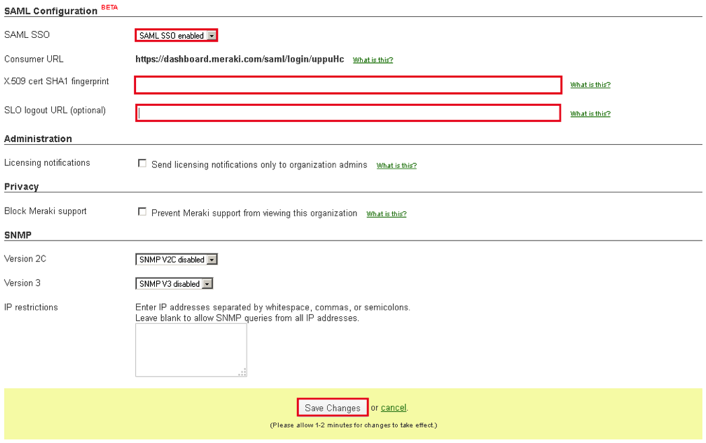

Sign in to Cisco Meraki Dashboard as an administrator.
Navigate to Organization > Settings > SAML Configuration. The screen shown below opens.

Enter the X.509 cert SHA1 fingerprint, as shown above.
Use the fingerprint below and convert it to the format Cisco Meraki Dashboard requires. Change all letters in the fingerprint below to upper case and insert colons after every second character. For example, if the fingerprint below were 1x2y3z, change it to 1X:2Y:3Z using a text editor, before pasting it into the form.
Enter the following SLO logout URL (optional), as shown above.
Sign into the Okta Admin dashboard to generate this value.Select Save Changes.
Note: An IdP-initiated flow and Just In Time (JIT) provisioning are supported. An SP-initiated flow is not supported.